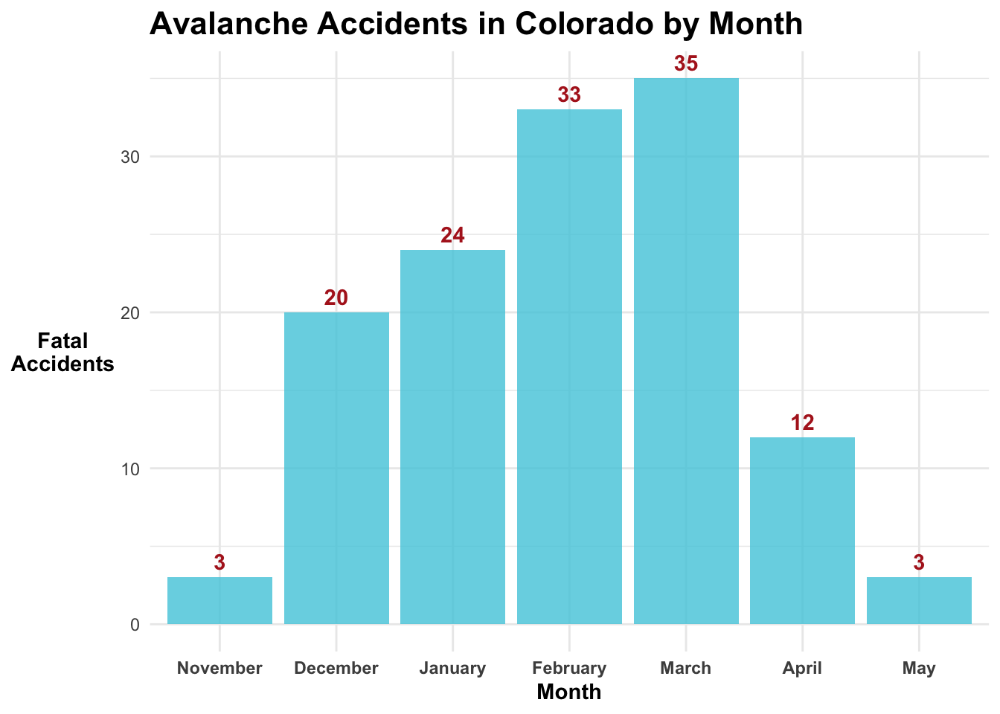

# ---- Load required packages ----
library(here) # for file management
library(tidyverse) # for data wrangling
library(ggplot2) # for plotting
library(knitr) # for tables and visualizing things
library(kableExtra) # for creating tables
library(DT) # for creating df tables
library(broom) # for creating table for glm results
library(terra) # for working with vector spatial data
library(sf) # for working with vector spatial data
library(elevatr) # for extracting elevation at pointsThere is something wondrous about getting yourself up a snowy mountain, beit by the power of a snowmobile or skis underfoot - surrounded by nothing but peaks, trees, and your trusty companions beside. Winter recreation can be really fun, exciting, and uniquely challenging. With advancements in touring and navigating equipment (and cool photos on social media), it’s no surprise that backcountry winter adventures are more popular than ever.

As an avid snowboarder, I enjoy exploring the backcountry on skis or by snowmobile. It wasn’t until I moved from California to a mountain town in Northern Colorado, just over 6 years ago, that I fully realized the significant risks that avalanches play in the mountains. Colorado is the most dangerous state for avalanche risk, leading the U.S. in avalanche accidents year to year. Its steep, rugged terrain and cold temperatures, mixed with low-moisture snowstorms creates conditions that make “the perfect storm” for avalanche conditions. These conditions make it harder for snowpack to consolidate, leaving unstable slabs of new snow, sitting on top of weak, faceted older layers, just waiting for a slight trigger to set them in motion. There are a lot of factors that influence avalanche risk, so I wanted to investigate that with my project.
Colorado is fortunate to have the Colorado Avalanche Information Center(CAIC), which is an organization that provides avalanche education, research, and daily forecasting for the public. They have a robust avalanche reporting and forecasting system. Below is a feature of their interactive dashboard that provides daily avalanche risk forecasting.  Check out the CAIC website
Check out the CAIC website
This is where I got the avalanche report data for my project. Their readily available dataset has only a subset of information that CAIC collects for their avalanche reports and only contains fatal accidents, excluding avalanche accidents where a human was involved (but no fatality occurred). This limited the type of question that I could ask for this assignment, given the timeline.
I know that CAIC has a danger scale that ranges from low to extreme and they actually, and they designate different risk levels for three elevation bands: below ( < 11,000ft), near (11,000 - 12,000 ft), and above (12,000ft + ). This is because various environmental factors (like temperature, wind, precipitation) influence how snow consolidates at these levels. Knowing that elevation plays an important role in how CAIC designates and communicates avalanche risk, I designed my research question around how elevation impacts the risk of an avalanche accident.
The model formation that I ended up landing on was:
Avalanche Accidents ~ Month + Elevation Band + Month : Elevation Band
Variations in temperature and precipitation patterns play an important role in how snowpack consolidates across different elevation bands. To capture these variations, I include “elevation band” (below, near, and above treeline) and “month” predictor variables. Month is being treated as a proxy for environmental variations that could impact avalanche likelihood, since month is a variable available in the CAIC dataset, this was a practical, though indirect, way for me to consider those variables for this project. Additionally, I incorporated an interaction term between month and elevation. My reasoning behind this is that the effect of elevation on avalanche might vary by the time of the year. My intuition about the relationship between elevation, month, and avalanche is as follows:
- Below Treeline: I expect to see more avalanche accidents overall compared to other elevation bands, with relatively little variation across months
- Above Treeline: I anticipate fewer avalanche accidents overall, but significant variability across months
- Near Treeline: I predict it would fall somewhere in between, with moderate avalanche accidents and seasonal variation
I made an attempt to visualize this hypothesis in the figure below:
For this analysis the Null Hypothesis (H₀) is that there is no interaction between elevation zones and months in determining avalanche fatality rates and the Alternative Hypothesis is that Avalanche fatality rates differ by elevation zone and month.
So without further ado, let’s jump into my beginner’s R analysis exploring the impact of elevation and season and elevation on season, on avalanche risk in Colorado.
1. Set Up Workspace
To get started, I need to set up my workspace. In the code chunk below, I load in the packages that will be necessary for my analysis.
2. Read in Project Data
Next up, I read in CAIC’s avalanche accident data, filtered for the state of Colorado. The data is made up of 271 avalanche observations from 1951 - 2023. A table of the project data is below.
# ---- Read in data ----
av_accidents <- read_csv(here::here("data","avalanche_accidents.csv")) %>%
filter(State == "CO") # Filter for Colorado (CO) in State Column
# Create table for CO avalanche data
datatable(av_accidents, options = list(pageLength = 3))3. Prepare Data
Before I can extract elevation values for the accident locations, I need to convert the av_accidents data to a spatial object. In the next code chunk, I clean lat and lon columns by removing ‘NA’ and obscure values including values ‘0’ and ‘#REF!’, then I convert the data frame to a spatial object using the sf packages st_as_sf tool.
Convert av_accidents to a Spatial Object
# ---- Clean av_accidents data ----
# Clean lat and lon columns by removing NAs, 0, and #REF values
av_accidents <- av_accidents %>%
drop_na(lat, lon) %>% # Drop NAs in lat and lon columns
mutate(across(c(lat, lon), as.character)) %>% # Ensure columns are characters for filtering
filter(lat != "0", lon != "0", lat != "#REF!", lon != "#REF!") %>% # Remove values that equal 0 or #REF!
mutate(across(c(lat, lon), as.numeric)) # Convert back to numeric
# Convert avalanche accidents to spatial object to extract elevation at geometry
av_points <- sf::st_as_sf(av_accidents, coords = c("lon", "lat"), crs = 4326) # Use 4326 to match Elevatr data crsExtract & Prepare Elevation at Accident Locations
To get the elevation at accident locations I use the get_elev_point tool from the elevatr package. This tool accesses USGS elevation from the Amazon Warehouse Service API to extract elevation at points without having to download a whole raster.
Then I add a column for elevation_group, because for my project I specifically want to look at avalanche risk relative to the different elevation bands that CAIC forecasts for using the values in the table below for “Below”, “Near” and “Above” treeline.
| Elevation Band | Min Elevation (m) | Max Elevation (m) | |
|---|---|---|---|
| Below Treeline (< 11,000ft) | 3,352 | ||
| Near Treeline (11,000ft < 12,000ft) | 3,352 | 3,652 | |
| Above Treeline ( 12,000ft < ) | 3,652 |
# ---- Extract elevation at avalanche accident locations ----
# Call in elevation data using `elevatr`
av_points <- get_elev_point(locations = av_points,
prj = sf::st_crs(4326)$proj4string)
# Convert the result back to a data frame by replacing av_accidents
av_accidents <- as.data.frame(av_points)
# ---- Clean and remove unwanted elevation values ----
av_accidents <- av_accidents %>%
filter(elevation != 0, elevation != -10000)
# ---- Add a column for elevation band ----
# Define and add a column for elevation groups
av_accidents <- av_accidents %>%
mutate(elevation_group = case_when(
elevation < 3352.8 ~ "Below Treeline",
elevation >= 3352.8 & elevation <= 3652 ~ "Near Treeline",
elevation > 3652 ~ "Above Treeline"
))Take a Look at Accidents by Elevation
Code
# ---- Plot accidents by elevation group ----
ggplot(data = av_accidents) +
geom_histogram(aes(x = elevation),
fill = "#4ECBDE",
alpha = 0.8) +
geom_vline(xintercept = c(3352.8, 3652), color = "firebrick", size = 0.75, linetype = "solid") +
theme_minimal() +
theme(plot.title = element_text(face = "bold", size = 16),
axis.title.x = element_text(angle = 0,
vjust = 0.5,
face = "bold"),
axis.title.y = element_text(angle = 0,
vjust = 0.5,
face = "bold")) +
labs(title = "Avalanches Accidents by Elevation Zone in Colorado",
x = "Elevation (Meters)",
y = "Avalanche\nAccidents") +
geom_text(aes(x = 3100, y = .5),
label = "Below Treeline", size = 4, fontface = "italic") +
geom_text(aes(x = 3500, y = .82),
label = "Near\nTreeline", size = 4, fontface = "italic") +
geom_text(aes(x = 3850, y = .5),
label = "Above Treeline", size = 4, fontface = "italic")
Prepare the Month Data for Avalanche Accidents
Next, I want to prepare the month data for my model. I’d like to start by creating a preliminary graph to see the distribution of avalanche accidents by month. Before I can do that, I want to create a month names column and assign their respective names. To do this, I define vector lists for month_labels (for their names) and month_levels to reorder them sequentially for the winter season. Then I create a new column in the av_accidents dataset as an ordered factor; I set the labels equal to month_labels, the levels as month_levels, and the ordered parameter to TRUE.
# ---- Prepare month column for preliminary plots ----
# Define month labels and order
month_levels <- c(9, 10, 11, 12, 1, 2, 3, 4, 5, 6, 7, 8)
month_labels <- c("September", "October", "November", "December",
"January", "February", "March", "April",
"May", "June", "July", "August")
av_accidents$month_names <- factor(av_accidents$MM,
levels = month_levels,
labels = month_labels,
ordered = TRUE)Now it’s time to visualize avalanche accidents by month in Colorado.
Code
# ---- Plot accidents by month sorted by season order ----
ggplot(data = av_accidents) +
geom_bar(aes(x = month_names),
fill = "#4ECBDE",
alpha = 0.8) +
theme_minimal() +
theme(plot.title = element_text(face = "bold",size = 16),
axis.text.x = element_text(angle = 0,
hjust = 0.5,
face = "bold"),
axis.title.y = element_text(angle = 0,
vjust = 0.5,
face = "bold"),
axis.title.x = element_text(angle = 0,
face = "bold")) +
geom_text(
aes(x = factor(month_names), label = ..count..),
stat = "count",
vjust = -0.5,
color = "firebrick",
fontface = "bold"
) +
labs(title = "Avalanche Accidents in Colorado by Month",
x = "Month",
y = "Fatal\nAccidents")
This plot above is a bar chart with month_names on the x-axis and the count of fatal accidents on the y-axis for Colorado from 1950 - 2023. Based on the plot, it looks like there are fewer fatal avalanches in November and May than in the middle winter months, like February and March. This data shows that March has observed the most avalanche accidents, with a total of 35 fatal accidents.
Looking at the distribution of accidents across months, it is more of a curved than a linear relationship between month and fatal accidents. Considering that I’m going to be performing a generalized linear model (glm), it would be beneficial to transform my data in a way that will fit be more linear. Since March is the month with the highest number of accidents, I’m going to create a new column for my dataset based off of the months ‘distance’ (months) to March.
| Month Name | Month Number ‘MM’ | Distance to March (months) | |
|---|---|---|---|
| January | 1 | 2 | |
| February | 2 | 1 | |
| March | 3 | 0 | |
| April | 4 | 1 | |
| May | 5 | 2 | |
| June | 6 | 3 | |
| July | 7 | 4 | |
| August | 8 | 5 | |
| September | 9 | 6 | |
| October | 10 | 5 | |
| November | 11 | 4 | |
| December | 12 | 3 |
In the code chunk below, I create a key to assign a new month column MM_to_March based on their closest distance (months) to March.
# ---- Prepare the MM_to_March column for glm ----
month_distance_to_march <- c(
"1" = 2, "2" = 1, "3" = 0,
"4" = 1, "5" = 2, "6" = 3,
"7" = 4, "8" = 5, "9" = 5,
"10" = 4, "11" = 4, "12" = 3
)
# Apply the MM column to distances relative to March
av_accidents$MM_to_March <- as.numeric(month_distance_to_march[as.character(av_accidents$MM)])4. Fit the Generalized Linear Model for Avalanche Accidents
The question that I’m exploring with my generalized linear model is How does month and elevation zone and their interaction influence the probability of a fatal avalanche accident? Before I perform the glm, I need to group and aggregate my data by the variables that I will including in the model: MM_to_March and elevation_group.
A reminder that MM_to_March is a continuous variable for distance (months) to March, since March was the month with the most amount of avalanche accidents. Additionally, elevation_group, which will be treated as a categorical variable, designates which of the three major elevation bands, that CAIC categorizes for avalanche risk, the avalanche accidents occurred in.
Alright, so now that I have my data all prepped, I’m ready to set up my model:
The model formulation is: ##### Avalanche Accidents ~ MM_to_March + elevation_group + MM_to_March : elevation_group
The family of model that I ended up using was Poisson(link = “log”). This is a standard family for modeling count data, which assumes that the response variable follows a Poisson distribution with a mean that is a function of the predictors. The log link is commonly used for this family because it ensures the predicted count remains positive.
# ---- Define the glm for avalanche accidents ----
# Aggregate data by Month and elevation group
av_accidents_agg <- av_accidents %>%
group_by(MM_to_March, elevation_group) %>%
summarise(accidents = n(), .groups = "drop")
# Fit the avalanche accident model
av_accident_glm <- glm(accidents ~ elevation_group + MM_to_March + elevation_group:MM_to_March,
family = poisson(link = "log"),
data = av_accidents_agg)5. Explore Model Results
In the code chunk below I explore my model results.
# Explore model results
summary(av_accident_glm)
Call:
glm(formula = accidents ~ elevation_group + MM_to_March + elevation_group:MM_to_March,
family = poisson(link = "log"), data = av_accidents_agg)
Coefficients:
Estimate Std. Error z value Pr(>|z|)
(Intercept) 2.16171 0.29739 7.269 3.62e-13
elevation_groupBelow Treeline 0.90758 0.35059 2.589 0.00963
elevation_groupNear Treeline 0.59954 0.36502 1.642 0.10049
MM_to_March -0.24403 0.18341 -1.330 0.18336
elevation_groupBelow Treeline:MM_to_March -0.14839 0.21036 -0.705 0.48056
elevation_groupNear Treeline:MM_to_March -0.04744 0.21269 -0.223 0.82351
(Intercept) ***
elevation_groupBelow Treeline **
elevation_groupNear Treeline
MM_to_March
elevation_groupBelow Treeline:MM_to_March
elevation_groupNear Treeline:MM_to_March
---
Signif. codes: 0 '***' 0.001 '**' 0.01 '*' 0.05 '.' 0.1 ' ' 1
(Dispersion parameter for poisson family taken to be 1)
Null deviance: 48.317 on 13 degrees of freedom
Residual deviance: 16.027 on 8 degrees of freedom
AIC: 81.934
Number of Fisher Scoring iterations: 5# ---- Make a nice table for GLM results ----
# Tidy the GLM results
glm_summary <- tidy(av_accident_glm)
# Create using kable
kable(glm_summary, digits = 3, caption = "GLM Coefficients for Avalanche Accidents")| term | estimate | std.error | statistic | p.value |
|---|---|---|---|---|
| (Intercept) | 2.162 | 0.297 | 7.269 | 0.000 |
| elevation_groupBelow Treeline | 0.908 | 0.351 | 2.589 | 0.010 |
| elevation_groupNear Treeline | 0.600 | 0.365 | 1.642 | 0.100 |
| MM_to_March | -0.244 | 0.183 | -1.330 | 0.183 |
| elevation_groupBelow Treeline:MM_to_March | -0.148 | 0.210 | -0.705 | 0.481 |
| elevation_groupNear Treeline:MM_to_March | -0.047 | 0.213 | -0.223 | 0.824 |
Let’s dig into the details:
Coefficients for elevation:
- The intercept or
Above Tree Linegroup for my model, which is when the month is March (MM_to_March= 0) at reference group set to “Above Tree Line”, returned a coefficient as 2.16 and a significant p-value. Given the significance of the p-value, this suggests that being “Above Tree Line” is a significant predictor for my model. - The
Below Treelinegroup for my model provided a coefficient of 0.98 and a significant p-value of 0.01. This suggests that accidents are significantly more likely to happen in the “Below Treeline” group. - The
Near Treelinegroup for my model returned an estimate of 0.6 and an insignificant p-value of 0.1, which provides evidence that being in the “Near Treeline” group does not meaningfully influence the likelihood of a fatal avalanche accident.
Coefficients for month:
- The
MM_to_Marchgroup returned a coefficient of -0.244 which suggests that as you move away from March there are fewer fatal accidents, however the p-value of 0.183 suggests that this relationship is not significant.
Coefficients for interaction term:
- Non of the interaction terms had a significant p-value, which provides evidence that the effect of elevation does not vary significantly by month.
Overall conclusion
The model results show that, for my avalanche data, distance from March and the interaction between distance from March and elevation group are not significant predictors for avalanche accidents. This provides evidence that these factors alone do not substantially affect the avalanche accident counts. However, the model did provide evidence that elevation group, particularly that being below treeline positively influence the likelihood of a fatal avalanche accident occurring.
To me this result is likely influenced by the reality that more people recreate closer to trailheads, which typically are closer or below treeline and less people travel further into the backcountry, rather than an environmental factor like the model was hoping to get at. The preliminary plot showing avalanche count by elevation showed that the residuals after 4000 m are very negative, which supports my assumption, so this could certainly be impacting the results of my model.
Some important things that I want to point out are that my data didn’t fit a linear pattern very well, which is important for using glms. So I don’t think that the question that I asked for the data was ideal. Avalanches are seasonal and I believe that there are better ways for modeling this type of data that I’m not yet familiar with.
Additionally, avalanche fatalities have an important behavioral factor that was difficult for me to model with this data, and given the scope of this project, so I think that incorporating that could be interesting in the future. It would also be be cool to investigate the proportion of fatal vs non-fatal accidents. This would require me finding additional data from CAIC or another group.
This analysis certainly raises more questions than answers, but I thoroughly enjoyed going through the process of defining a research question, finding data, following my intuition, and designing a model.
References:
Colorado Avalanche Information Center (CAIC), CAIC Accident Data 2023 (https://avalanche.state.co.us/accidents/statistics-and-reporting) Access date: 12/01/24
United States Geologic Survey (USGS), The National Map - Elevation Point Query Service.(https://apps.nationalmap.gov/epqs/) Accessed using
Elevatorpackage in R. Access date: 12/01/24
Acknowledgments:
This assignment was created for UCSB MEDS, EDS 223 - Statistics for Environmental Data Science. Thank you to our professor Max Czapanskiy and teaching assistant Leo Feitosa for their wisdom and support throughout the class.